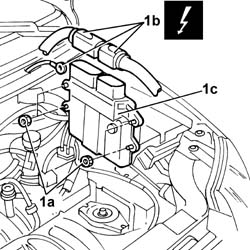

1060G80 ds electric injection control unit - r r
- Path
- Procedures > 10 ENGINE UNIT > 1060 DIESEL FUEL INJECTION > 1060G pressure pump electric control > 1060G80 ds electric injection control unit - r r
- Kind
- repair procedure (removal / refitting; the operation number is the code)
- Applies to
- engines: 1.3 JTD 16v; all production periods
- Interactive page
- https://sloeber94.github.io/elrnDB-fPnd/en/#/2752611
Applies to: engines: 1.3 JTD 16v; all production periods
 Removing
Removing
 Refitting
Refitting1. Undo the fixing nuts (1a), disconnect the electrical connections (1b) and remove the engine management control unit (1c).
 | Name | Connector |
|---|---|---|
1b | Engine management control unit | M10A |
| Name | Connector |
|---|---|---|
1b | Engine management control unit | M10B |
| Name | Connector |
|---|---|---|
1b | Engine management control unit | M10C |

Applies to: engines: 1.3 JTD 16v; all production periods
Refitting
RemovingConnect the electrical connection to the engine management control unit.
| Name | Connector |
|---|---|---|
- | Engine management control unit | M10A |
| Name | Connector |
|---|---|---|
- | Engine management control unit | M10B |
| Name | Connector |
|---|---|---|
- | Engine management control unit | M10C |
Tighten the nuts fixing the control unit.
Topics that link to this page (9)
- B13 ENGINE STARTS WITH DIFFICULTY'
- B20 ENGINE STARTS, AND CUTS OUT STRAIGHT AWAY
- D03 ENGINE NOT RUNNING SMOOTHLY / (IRREGULAR OPERATION)
- D04 ENGINE NOT RUNNING SMOOTHLY
- D05 ENGINE DOES NOT PRODUCE BEST PERFORMANCE
- D10 ENGINE IDLE IRREGULAR
- Z75 STEERING ANGLE SENSOR ERROR
- Z84 VARIANT CODING ERROR
- 0510A10 cylinder compression - check for loose spark plugs or injectors